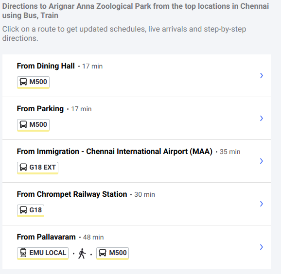

The first zoo opened for public in India and the Largest Zoological Garden in India, spreading across a vast area of 1300 acres, is the Arignar Anna Zoological Park called as Vandalur Zoo. It was actually housed inside the Government funded Museum in the year 1855 in Pantheon Road, Egmore, Chennai. Later on, due to the increase in the number of inmates and due to the fact there was a lot of noise pollution due to increase in the density of city traffic, the zoo was transferred to the outskirts of the Chennai in a serene area called Vandalur. The zoo was constructed at a cost of approximately $75 million and it was opened to public on 24th July,1985 by the then Chief Minister of Tamil Nadu Dr.M.G.Ramachandran. This zoo is affiliated to the Central Zoo Authority of India. After few years, the zoo enjoyed many expansions including a rescue and rehabilitation area in an area of 230 acres. The very objective of constructing this zoo in such an exhaustive manner is to prevent the extinction of very rare species of wild animals at the national and international level.
Even one full day will not be sufficient for the visitors to this zoo as there are 2553 species of flora and fauna maintained in this premises. There are 1500 wild species and 46 endangered species which are prevented from entering into the extinct list. Other than there are species of 47 mammals, 63 birds, 5 amphibians, 25 fishes and 10 insects. It is to be noted with pride that this zoological garden is the second wildlife sanctuary in India next to the Mudumalai Wildlife Sanctuary. Once you enter into the zoo, you will be taken to a different world where the animals and birds are living in a natural forest environment both in the free zones as well as in the moated enclosures. The resting places for them have been arranged in such a way that the biological eco system is well maintained. This is accomplished by the theory of “Survival of the Fittest”.
Distance Of Kolli Hills From Major Cities
